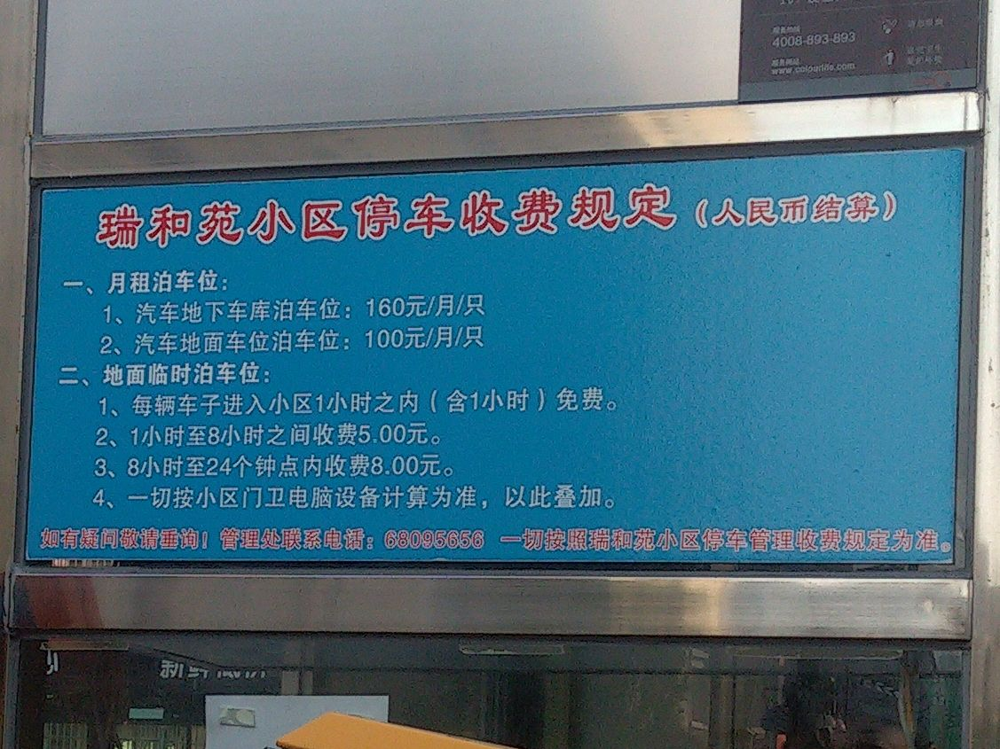
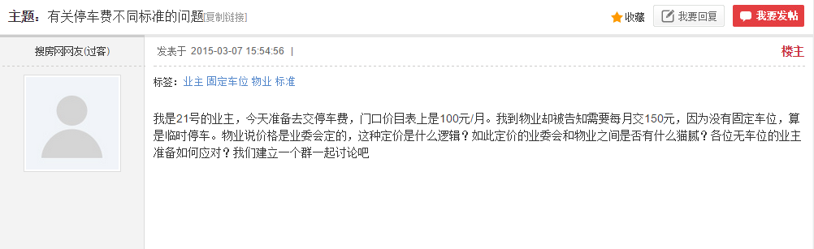
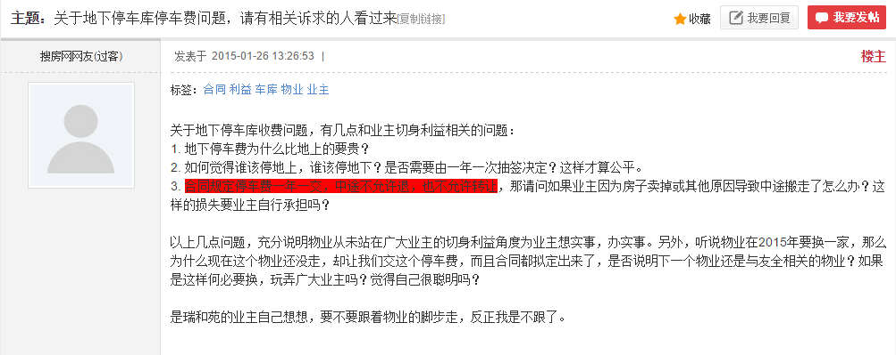
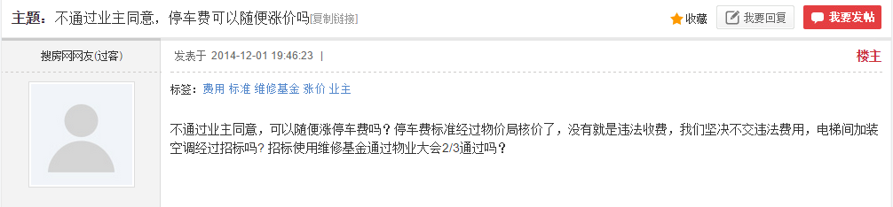
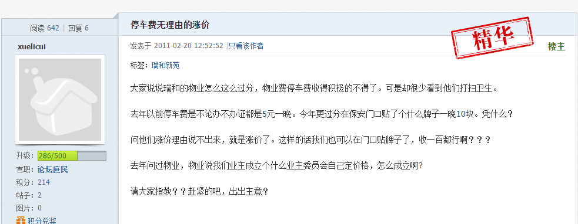
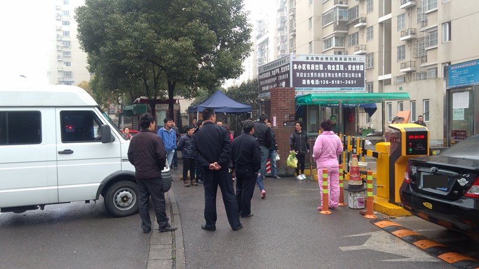
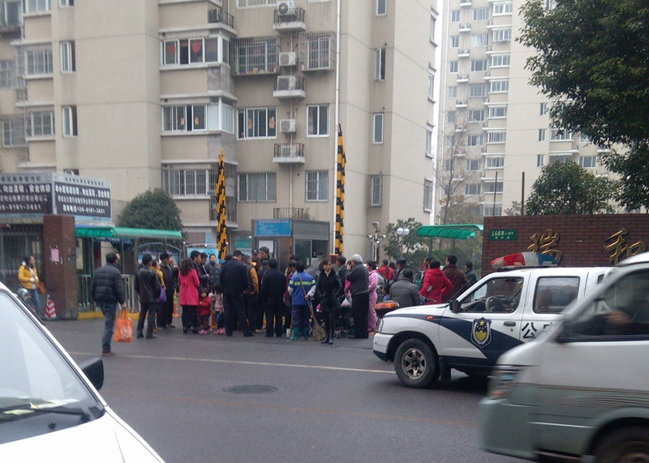

停车管理之“高水平”
下图是物业“下达”的收费标准。  作为业主的大部分人并不知道这份标准是怎么产生的。有亲戚朋友周末到访的，小坐一下很正常，超过一小时很正常，却要收费5元。
标准里面根本没有涉及没有车位的业主，按这个标准，停在小区，没有车位，还要8*30 = 240每月。这无论搁在周浦哪个小区，应该都不会让业主好受吧！？
短短数日，搜房论坛上已经有了很多声音。   还有搜狐焦点网的声音。
还有，现实中的冲突……
3月15,黑色车主进入小区就停车发送矛盾，还惊动了警察。
 而大多数没有车位的业主选择沉默，将私家车停在小区外......
众人拾柴火焰高，如果您有任何关于瑞和苑物业要说的话，请联系 AntiRuiHePM@163.com。我会将它们整理出来，并呈现在这个。